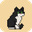

PISI
Checking…
Play on
this site
On by default. PISI always steps off pages that ask for a password or card number, and skips mail, banks and password managers.
PISI can't visit this kind of page.
Pause everywhere
Guard my focus here
During a focus block, PISI comes and sits on this site. Drag the cat off for five minutes (less each time you do it).
Quick picks:
Fade the page while I guard
Let PISI make a mess
Now and then PISI knocks a word off the end of a line, or digs through a paragraph and sends the words flying. Only what you see changes; tidying up or reloading puts them back.
Tidy up this page